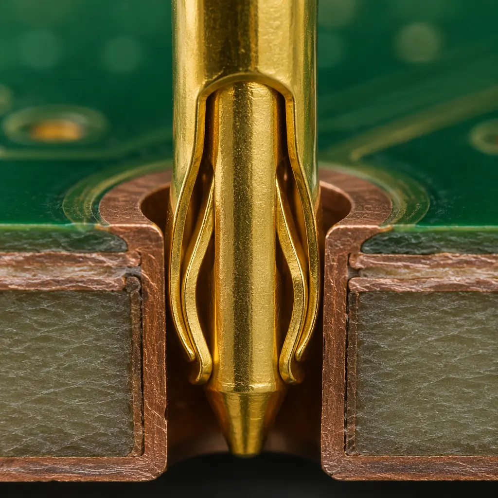
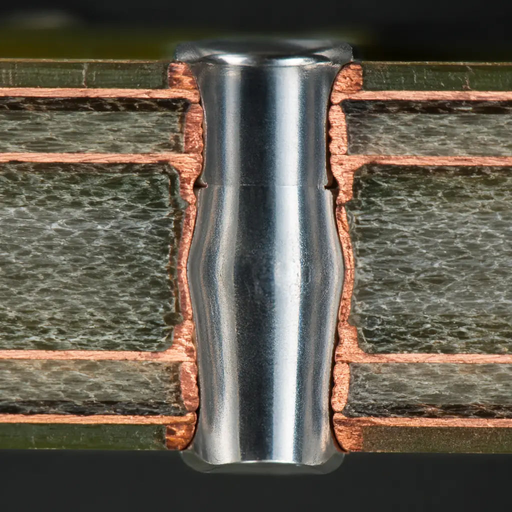

When an automotive ECU connector carries 200 amps to an electric power steering motor, or a server backplane routes 112 Gbps PAM-4 signals through hundreds of connector pins, soldering becomes a liability. Solder joints crack under thermal cycling. Voids create hotspots at high current. Flux residues risk ionic contamination. And visual inspection of thousands of BGA-style connector pins under a shroud is essentially impossible.
Press-fit technology — also called compliant-pin technology — solves these problems with a deceptively simple principle: a pin slightly larger than its hole is pressed into a plated through-hole, creating a gas-tight, cold-welded connection that requires zero solder. Originally developed for telecom backplanes in the 1970s, press-fit has expanded into automotive power electronics, industrial motor drives, renewable energy inverters, and aerospace — anywhere that solder joints represent the weakest link. At Huaxing PCBA, our press-fit assembly capability spans up to 1,500 insertion cycles per batch with 100% cross-section verification for process qualification.

How Press-Fit Pins Actually Work
A press-fit pin is not a simple cylinder. The compliant section — typically an "eye-of-needle" (EON) geometry — is slightly wider than the PCB hole diameter. When pressed in, the compliant section elastically and plastically deforms, exerting a controlled normal force (typically 30-80 N per pin for standard EON designs) against the plated hole wall. This creates:
Gas-Tight Cold Weld
The high contact pressure (typically 200-500 MPa at asperity peaks) displaces surface oxides and creates metal-to-metal contact between the tin or gold plating on the pin and the copper/tin plating on the hole wall. This junction is impermeable to oxygen and corrosive gases — no oxidation can occur at the contact interface. For surface finish context, see our PCB surface finish selection guide.
Multiple Redundant Contact Points
Unlike a solder fillet that provides one continuous connection, an EON press-fit pin makes 2-4 independent contact zones — the two beams of the "needle" each contact the hole wall at upper and lower regions. This redundancy means a single contact failure doesn't open the circuit. For high-reliability design principles, read our IPC Class 2 vs Class 3 guide.
Zero Intermetallic Growth
Solder joints inevitably form Cu-Sn intermetallic compounds (IMC) that grow over time and become brittle. Press-fit connections have no solder, therefore no IMC. The contact interface remains mechanically stable across decades of thermal cycling — a key advantage for products with 15-20 year service lives. Our thermal management guide covers how temperature affects interconnect reliability.
Key Advantage: Press-fit eliminates the entire solder-joint failure chain: no solder bridging, no voids, no insufficient fillet, no cold joints, no tombstoning, no flux residue. If the pin is fully seated, the connection is made. Quality control shifts from statistical sampling (AOI + X-ray on soldered joints) to deterministic pin-height measurement — faster, cheaper, and more reliable.
PCB Hole Specifications for Press-Fit
The PCB design is where press-fit succeeds or fails. Unlike soldered through-holes where clearance is forgiving, press-fit requires tight-tolerance plated holes with specific copper thickness and finish requirements.
| Parameter | Standard Press-Fit (0.6-1.0mm) | Micro Press-Fit (0.4-0.6mm) | Power Press-Fit (1.2-2.4mm) |
|---|---|---|---|
| Finished Hole Diameter | ±0.05mm | ±0.04mm | ±0.07mm |
| Copper Thickness in Barrel | ≥25μm (1 oz) | ≥20μm | ≥35μm |
| Surface Finish | Immersion Tin or ENIG | ENIG preferred | Immersion Tin |
| Annular Ring (min) | 0.15mm | 0.125mm | 0.20mm |
| Hole Wall Roughness | ≤2.5μm Ra | ≤2.0μm Ra | ≤3.0μm Ra |
| Typical Pin Retention Force | 30-50 N | 15-30 N | 60-120 N |
The hole plating quality is critical. A thin spot in the copper barrel, a void in the plated through-hole, or excessive hole-wall roughness can reduce contact area below specification — and since press-fit connections are hidden inside the hole, none of these defects are visible after assembly. This is why PCB suppliers serving press-fit applications must validate their plating process with microsection analysis per IPC-6012. See our microsection analysis guide for what to look for.

Assembly Process: Press-Fit vs Pin-in-Paste vs Selective Soldering
Press-fit assembly is mechanically straightforward but demands precision:
Press Force and Speed Control
A servo-electric or pneumatic press drives the connector into the PCB at a controlled speed (typically 25-50 mm/min) while monitoring insertion force. The force signature tells the story: a smooth force ramp followed by a plateau indicates proper seating; a spike suggests misalignment or a blocked hole; a drop suggests a cracked barrel. Modern presses store the force-distance curve for every pin — making press-fit one of the few assembly processes with 100% in-line quality data. For assembly equipment context, see our PCB assembly process guide.
Tooling and Support Plates
The PCB must be rigidly supported from below directly under the connector footprint. Without proper support, the board deflects during insertion — resulting in partially seated pins on one side of the connector. For high-density connectors with 100+ pins, a dedicated press-fit support plate (machined aluminum or steel) is essential. Tooling cost: $1,000-$5,000 per connector footprint.
Mixed-Technology Boards: Press-Fit + SMT
Many boards combine surface-mount components with press-fit connectors. The critical question is sequencing: press-fit before or after reflow? The answer depends on the connector's thermal rating. Press-fit first, then reflow is preferred when the connector can withstand reflow temperatures (many automotive-grade connectors are rated to 260°C peak). Reflow first, then press-fit is used when the connector is not reflow-compatible — but requires careful fixture design to avoid stressing already-soldered SMT joints. See our wave vs selective soldering comparison for through-hole alternatives.
Procurement Tip: The decision between press-fit, pin-in-paste, and selective soldering is often made at the connector selection stage — before the PCB designer even thinks about assembly. If your design uses connectors available in press-fit pin configuration, you have the option. Check connector datasheets for "compliant pin" or "press-fit termination" variants. Many TE Connectivity, Amphenol, and Molex connectors offer both solder-tail and press-fit versions of the same housing.
Reliability: Press-Fit vs Soldered Connections
Multiple studies — including the Automotive Electronics Council (AEC-Q100/Q200) qualification data and IPC-9701 solder-joint reliability testing — confirm that properly executed press-fit connections outperform soldered joints in nearly every reliability metric:
| Reliability Test | Soldered Through-Hole | Press-Fit | Winner |
|---|---|---|---|
| Thermal Cycling (-40 to +125°C, 1,000 cycles) | Resistance increase >20% typical | Resistance increase <5% typical | Press-Fit |
| Vibration (10-2,000 Hz, 20G, 8 hrs/axis) | Solder cracks at fillet edge after 4-6 hours | No measurable degradation | Press-Fit |
| High-Current Cycling (0-100A, 10,000 cycles) | IMC growth, resistance drift >10% | Stable within measurement tolerance | Press-Fit |
| Mixed Flowing Gas (IEC 60068-2-60, 21 days) | Oxidation at exposed solder surface | Gas-tight: no ingress beyond 50μm | Press-Fit |
| High-Temperature Storage (150°C, 1,000 hrs) | IMC thickening, Kirkendall voiding | No intermetallic: no degradation mechanism | Press-Fit |
For high-power applications specifically, press-fit's advantage is magnified. A soldered joint carrying 100A experiences Joule heating at the solder-pad interface, where current density is highest. Over time, this localized heating accelerates IMC growth precisely at the current-carrying interface — a positive feedback loop that ends in thermal runaway. Press-fit connections spread current across the entire plated barrel surface, eliminating this hotspot effect. Our copper weight selection guide covers the PCB-side current capacity calculations.
Where Press-Fit Makes Sense — and Where It Doesn't
Use Press-Fit For:
High-pin-count connectors (backplanes, mezzanine), high-current power connectors (>50A), automotive ECU connectors (under-hood, vibration environment), products with 10+ year service life, solder-process-incompatible connectors (high-temp thermoplastics), and any application where rework of a soldered connector would scrap the entire board.
Avoid Press-Fit For:
Prototype quantities (tooling cost per board is too high), designs with PCB thickness under 1.0mm (insufficient barrel length for retention), connectors without compliant-pin variants, boards with fine-pitch BGAs near the connector footprint (board flex during insertion can crack BGA joints), and low-layer-count consumer boards where the incremental reliability isn't worth the tooling investment. For prototype economics, see our prototype vs production guide.
Specifying Press-Fit on Your Assembly Order
When ordering PCB assembly with press-fit connectors, include these specifications:
| Specification Item | Example |
|---|---|
| Connector Part Numbers | Press-fit variant P/N, not solder-tail |
| PCB Hole Spec | Finished hole Ø1.00 ±0.05mm, 25μm min Cu |
| Surface Finish | ENIG (0.05-0.12μm Au over 3-7μm Ni) |
| Press Force per Pin | 40-80 N (per connector datasheet) |
| Quality Record | Force-distance curve for every pin, CSV data |
| Cross-Section Qty | Destructive analysis: 2 coupons per lot |
| Applicable Standard | IEC 60352-5 / IPC-9797 |
At Huaxing PCBA, we support press-fit assembly for connectors up to 200 pins with servo-electric press and force-distance monitoring per pin. Our PCB fabrication capability delivers the ±0.05mm finished hole tolerance that press-fit demands, verified by microsection on every production panel. For automotive customers, our IATF 16949 quality system ensures the process control and traceability that press-fit applications require. See our supplier quality scorecard guide for what to audit.